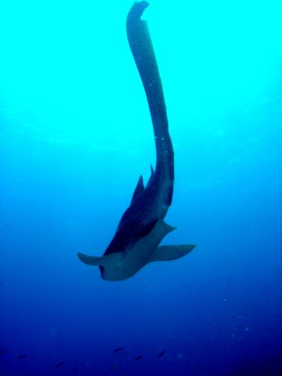

Boulder City
A deep site, which as the name suggests is full of boulders and many accompanying gorgonian sea fans, making it an impressive visual spectacle. Local inhabitants are leopard sharks, stingrays, scorpion fish, lionfish & the occasional mantas. A perfect site for deep divers.

Back